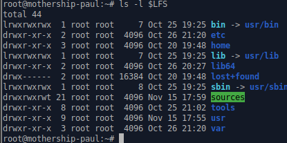
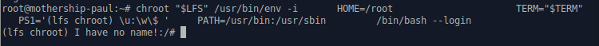

Milestone 3 (Chapter 6 and 7)
Chapter 6 Cross Compiling Temporary Tools
6.2.1. Installation of M4
Prepare M4 for compilation:
./configure --prefix=/usr \
--host=$LFS_TGT \
--build=$(build-aux/config.guess)Compile the package:
makeInstall the package:
make DESTDIR=$LFS install6.3.1. Installation of Ncurses
First, ensure that gawk is found first during configuration:
sed -i s/mawk// configureThen, run the following commands to build the “tic” program on the build host:
mkdir build
pushd build
../configure
make -C include
make -C progs tic
popdPrepare Ncurses for compilation:
./configure --prefix=/usr \
--host=$LFS_TGT \
--build=$(./config.guess) \
--mandir=/usr/share/man \
--with-manpage-format=normal \
--with-shared \
--without-normal \
--with-cxx-shared \
--without-debug \
--without-ada \
--disable-stripping \
--enable-widecCompile the package:
makeInstall the package:
make DESTDIR=$LFS TIC_PATH=$(pwd)/build/progs/tic install
echo "INPUT(-lncursesw)" > $LFS/usr/lib/libncurses.so6.4.1. Installation of Bash
Prepare Bash for compilation:
./configure --prefix=/usr \
--build=$(sh support/config.guess) \
--host=$LFS_TGT \
--without-bash-mallocCompile the package:
makeInstall the package:
make DESTDIR=$LFS installMake a link for the programs that use sh for a shell:
ln -sv bash $LFS/bin/sh6.5.1. Installation of Coreutils
Prepare Coreutils for compilation:
./configure --prefix=/usr \
--host=$LFS_TGT \
--build=$(build-aux/config.guess) \
--enable-install-program=hostname \
--enable-no-install-program=kill,uptimeCompile the package:
makeInstall the package:
make DESTDIR=$LFS installMove programs to their final expected locations. Although this is not necessary in this temporary environment, we must do so because some programs hardcode executable locations:
mv -v $LFS/usr/bin/chroot $LFS/usr/sbin
mkdir -pv $LFS/usr/share/man/man8
mv -v $LFS/usr/share/man/man1/chroot.1 $LFS/usr/share/man/man8/chroot.8
sed -i 's/"1"/"8"/' $LFS/usr/share/man/man8/chroot.86.6.1. Installation of Diffutils
Prepare Diffutils for compilation:
./configure --prefix=/usr --host=$LFS_TGTCompile the package:
makeInstall the package:
make DESTDIR=$LFS install6.7.1. Installation of File
The file command on the build host needs to be the same version as the one we are building in order to create the signature file. Run the following commands to make a temporary copy of the file command:
mkdir build
pushd build
../configure --disable-bzlib \
--disable-libseccomp \
--disable-xzlib \
--disable-zlib
make
popdPrepare File for compilation:
./configure --prefix=/usr --host=$LFS_TGT --build=$(./config.guess)Compile the package:
make FILE_COMPILE=$(pwd)/build/src/fileInstall the package:
make DESTDIR=$LFS installRemove the libtool archive file because it is harmful for cross compilation:
rm -v $LFS/usr/lib/libmagic.la6.8.1. Installation of Findutils
Prepare Findutils for compilation:
./configure --prefix=/usr \
--localstatedir=/var/lib/locate \
--host=$LFS_TGT \
--build=$(build-aux/config.guess)Compile the package:
makeInstall the package:
make DESTDIR=$LFS install6.9.1. Installation of Gawk
First, ensure some unneeded files are not installed:
sed -i 's/extras//' Makefile.inPrepare Gawk for compilation:
./configure --prefix=/usr \
--host=$LFS_TGT \
--build=$(build-aux/config.guess)Compile the package:
makeInstall the package:
make DESTDIR=$LFS install6.10.1. Installation of Grep
Prepare Grep for compilation:
./configure --prefix=/usr \
--host=$LFS_TGTCompile the package:
makeInstall the package:
make DESTDIR=$LFS install6.11.1. Installation of Gzip
Prepare Gzip for compilation:
./configure --prefix=/usr --host=$LFS_TGTCompile the package:
makeInstall the package:
make DESTDIR=$LFS install6.12.1. Installation of Make
First, fix an issue identified upstream:
sed -e '/ifdef SIGPIPE/,+2 d' \
-e '/undef FATAL_SIG/i FATAL_SIG (SIGPIPE);' \
-i src/main.cPrepare Make for compilation:
./configure --prefix=/usr \
--without-guile \
--host=$LFS_TGT \
--build=$(build-aux/config.guess)Compile the package:
makeInstall the package:
make DESTDIR=$LFS install6.13.1. Installation of Patch
Prepare Patch for compilation:
./configure --prefix=/usr \
--host=$LFS_TGT \
--build=$(build-aux/config.guess)Compile the package:
makeInstall the package:
make DESTDIR=$LFS install6.14.1. Installation of Sed
Prepare Sed for compilation:
./configure --prefix=/usr \
--host=$LFS_TGTCompile the package:
makeInstall the package:
make DESTDIR=$LFS install6.15.1. Installation of Tar
Prepare Tar for compilation:
./configure --prefix=/usr \
--host=$LFS_TGT \
--build=$(build-aux/config.guess)Compile the package:
makeInstall the package:
make DESTDIR=$LFS install6.16.1. Installation of Xz
Prepare Xz for compilation:
./configure --prefix=/usr \
--host=$LFS_TGT \
--build=$(build-aux/config.guess) \
--disable-static \
--docdir=/usr/share/doc/xz-5.2.7Compile the package:
makeInstall the package:
make DESTDIR=$LFS installRemove the libtool archive file because it is harmful for cross compilation:
rm -v $LFS/usr/lib/liblzma.la6.17. Binutils-2.39 - Pass 2
Delete contents of the build folder
cd build/
rm -rf ./*Prepare Binutils for compilation:
../configure \
--prefix=/usr \
--build=$(../config.guess) \
--host=$LFS_TGT \
--disable-nls \
--enable-shared \
--enable-gprofng=no \
--disable-werror \
--enable-64-bit-bfdCompile the package:
makeInstall the package:
make DESTDIR=$LFS installRemove the libtool archive files because they are harmful for cross compilation, and remove unnecessary static libraries:
rm -v $LFS/usr/lib/lib{bfd,ctf,ctf-nobfd,opcodes}.{a,la}6.18. GCC-12.2.0 - Pass 2
Delete contents of the build folder
rm -rf gcc-12.2.0
tar xf gcc-12.2.0.tar.xzAs in the first build of GCC, the GMP, MPFR, and MPC packages are required. Unpack the tarballs and move them into the required directories:
tar -xf ../mpfr-4.1.0.tar.xz
mv -v mpfr-4.1.0 mpfr
tar -xf ../gmp-6.2.1.tar.xz
mv -v gmp-6.2.1 gmp
tar -xf ../mpc-1.2.1.tar.gz
mv -v mpc-1.2.1 mpcIf building on x86_64, change the default directory name for 64-bit libraries to “lib”:
case $(uname -m) in
x86_64)
sed -e '/m64=/s/lib64/lib/' -i.orig gcc/config/i386/t-linux64
;;
esacOverride the building rule of libgcc and libstdc++ headers, to allow building these libraries with POSIX threads support:
sed '/thread_header =/s/@.*@/gthr-posix.h/' \
-i libgcc/Makefile.in libstdc++-v3/include/Makefile.inCreate a separate build directory again:
mkdir -v build
cd buildNow prepare GCC for compilation:
../configure \
--build=$(../config.guess) \
--host=$LFS_TGT \
--target=$LFS_TGT \
LDFLAGS_FOR_TARGET=-L$PWD/$LFS_TGT/libgcc \
--prefix=/usr \
--with-build-sysroot=$LFS \
--enable-default-pie \
--enable-default-ssp \
--disable-nls \
--disable-multilib \
--disable-decimal-float \
--disable-libatomic \
--disable-libgomp \
--disable-libquadmath \
--disable-libssp \
--disable-libvtv \
--enable-languages=c,c++Compile the package:
makeInstall the package:
make DESTDIR=$LFS installAs a finishing touch, create a utility symlink. Many programs and scripts run cc instead of gcc, which is used to keep programs generic and therefore usable on all kinds of UNIX systems where the GNU C compiler is not always installed. Running cc leaves the system administrator free to decide which C compiler to install:
ln -sv gcc $LFS/usr/bin/ccChapter 7 Entering Chroot and Building Additional Temporary Tools
7.2. Changing Ownership
chown -R root:root $LFS/{usr,lib,var,etc,bin,sbin,tools}
case $(uname -m) in
x86_64) chown -R root:root $LFS/lib64 ;;
esac
7.3. Preparing Virtual Kernel File Systems
creating directories onto which the file systems will be mounted
mkdir -pv $LFS/{dev,proc,sys,run}7.3.1. Mounting and Populating /dev
mount -v --bind /dev $LFS/dev7.3.2. Mounting Virtual Kernel File Systems
Now mount the remaining virtual kernel filesystems:
mount -v --bind /dev/pts $LFS/dev/pts
mount -vt proc proc $LFS/proc
mount -vt sysfs sysfs $LFS/sys
mount -vt tmpfs tmpfs $LFS/runIn some host systems, /dev/shm is a symbolic link to /run/shm. The /run tmpfs was mounted above so in this case only a directory needs to be created.
if [ -h $LFS/dev/shm ]; then
mkdir -pv $LFS/$(readlink $LFS/dev/shm)
fi7.4. Entering the Chroot Environment
chroot "$LFS" /usr/bin/env -i \
HOME=/root \
TERM="$TERM" \
PS1='(lfs chroot) \u:\w\$ ' \
PATH=/usr/bin:/usr/sbin \
/bin/bash --login
7.5. Creating Directories
Create some root-level directories that are not in the limited set required in the previous chapters by issuing the following command:
mkdir -pv /{boot,home,mnt,opt,srv}Create the required set of subdirectories below the root-level by issuing the following commands:
mkdir -pv /etc/{opt,sysconfig}
mkdir -pv /lib/firmware
mkdir -pv /media/{floppy,cdrom}
mkdir -pv /usr/{,local/}{include,src}
mkdir -pv /usr/local/{bin,lib,sbin}
mkdir -pv /usr/{,local/}share/{color,dict,doc,info,locale,man}
mkdir -pv /usr/{,local/}share/{misc,terminfo,zoneinfo}
mkdir -pv /usr/{,local/}share/man/man{1..8}
mkdir -pv /var/{cache,local,log,mail,opt,spool}
mkdir -pv /var/lib/{color,misc,locate}
ln -sfv /run /var/run
ln -sfv /run/lock /var/lock
install -dv -m 0750 /root
install -dv -m 1777 /tmp /var/tmp7.6. Creating Essential Files and Symlinks
ln -sv /proc/self/mounts /etc/mtabCreate a basic /etc/hosts file to be referenced in some test suites, and in one of Perl’s configuration files as well:
cat > /etc/hosts << EOF
127.0.0.1 localhost $(hostname)
::1 localhost
EOFCreate the /etc/passwd file by running the following command:
cat > /etc/passwd << "EOF"
root:x:0:0:root:/root:/bin/bash
bin:x:1:1:bin:/dev/null:/usr/bin/false
daemon:x:6:6:Daemon User:/dev/null:/usr/bin/false
messagebus:x:18:18:D-Bus Message Daemon User:/run/dbus:/usr/bin/false
uuidd:x:80:80:UUID Generation Daemon User:/dev/null:/usr/bin/false
nobody:x:65534:65534:Unprivileged User:/dev/null:/usr/bin/false
EOFThe actual password for root will be set later.
Create the /etc/group file by running the following command:
cat > /etc/group << "EOF"
root:x:0:
bin:x:1:daemon
sys:x:2:
kmem:x:3:
tape:x:4:
tty:x:5:
daemon:x:6:
floppy:x:7:
disk:x:8:
lp:x:9:
dialout:x:10:
audio:x:11:
video:x:12:
utmp:x:13:
usb:x:14:
cdrom:x:15:
adm:x:16:
messagebus:x:18:
input:x:24:
mail:x:34:
kvm:x:61:
uuidd:x:80:
wheel:x:97:
users:x:999:
nogroup:x:65534:
EOFWe add this user here and delete this account at the end of that chapter.
echo "tester:x:101:101::/home/tester:/bin/bash" >> /etc/passwd
echo "tester:x:101:" >> /etc/group
install -o tester -d /home/testerTo remove the “I have no name!” prompt, start a new shell. Since the /etc/passwd and /etc/group files have been created, user name and group name resolution will now work:
exec /usr/bin/bash --loginThe login, agetty, and init programs (and others) use a number of log files to record information such as who was logged into the system and when.
touch /var/log/{btmp,lastlog,faillog,wtmp}
chgrp -v utmp /var/log/lastlog
chmod -v 664 /var/log/lastlog
chmod -v 600 /var/log/btmp7.7. Gettext-0.21
7.7.1. Installation of Gettext
For our temporary set of tools, we only need to install three programs from Gettext.
Prepare Gettext for compilation:
./configure --disable-sharedCompile the package:
makeInstall the msgfmt, msgmerge, and xgettext programs:
cp -v gettext-tools/src/{msgfmt,msgmerge,xgettext} /usr/bin7.8. Bison-3.8.2
7.8.1. Installation of Bison
Prepare Bison for compilation:
./configure --prefix=/usr \
--docdir=/usr/share/doc/bison-3.8.2Compile the package:
makeInstall the package:
make install7.9. Perl-5.36.0
7.9.1. Installation of Perl
Prepare Perl for compilation:
sh Configure -des \
-Dprefix=/usr \
-Dvendorprefix=/usr \
-Dprivlib=/usr/lib/perl5/5.36/core_perl \
-Darchlib=/usr/lib/perl5/5.36/core_perl \
-Dsitelib=/usr/lib/perl5/5.36/site_perl \
-Dsitearch=/usr/lib/perl5/5.36/site_perl \
-Dvendorlib=/usr/lib/perl5/5.36/vendor_perl \
-Dvendorarch=/usr/lib/perl5/5.36/vendor_perlThe meaning of the new Configure options:
-des
This is a combination of three options: -d uses defaults for all items; -e ensures completion of all tasks; -s silences non-essential output.
Compile the package:
makeInstall the package:
make install7.10. Python-3.10.6
7.10.1. Installation of Python
Prepare Python for compilation:
./configure --prefix=/usr \
--enable-shared \
--without-ensurepipCompile the package:
makeInstall the package:
make install7.11. Texinfo-6.8
7.11.1. Installation of Texinfo
Prepare Texinfo for compilation:
./configure --prefix=/usrCompile the package:
makeInstall the package:
make install7.12. Util-linux-2.38.1
7.12.1. Installation of Util-linux
The FHS recommends using the /var/lib/hwclock directory instead of the usual /etc directory as the location for the adjtime file. Create this directory with:
mkdir -pv /var/lib/hwclockPrepare Util-linux for compilation:
./configure ADJTIME_PATH=/var/lib/hwclock/adjtime \
--libdir=/usr/lib \
--docdir=/usr/share/doc/util-linux-2.38.1 \
--disable-chfn-chsh \
--disable-login \
--disable-nologin \
--disable-su \
--disable-setpriv \
--disable-runuser \
--disable-pylibmount \
--disable-static \
--without-python \
runstatedir=/runCompile the package:
makeInstall the package:
make install7.13. Cleaning up and Saving the Temporary System
7.13.1. Cleaning
First, remove the currently installed documentation to prevent them from ending up in the final system, and to save about 35 MB:
rm -rf /usr/share/{info,man,doc}/*Second, the libtool .la files are only useful when linking with static libraries.
find /usr/{lib,libexec} -name \*.la -deleteIt uses about 1 GB of disk space.
rm -rf /tools